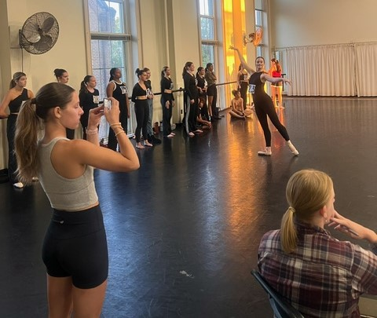

Gwynevere Deterding
.jpg)
Bio
Gwynevere Deterding, from Blue Springs, MO, is a senior at the University of Alabama majoring in dance and computer science. Gwynevere began her dance training at Tajazz School of Dance and later trained at City in Motion Dance Theater and Blue Springs Ballet. While at the University of Alabama, she has performed in productions of Alabama Repertory Dance Theatre, Dance Alabama!, and Emerging Choreographers’ Showcase, as well as appearing in screendances in the Dance Alabama Film Festival. She was also a member of Yonder Contemporary Dance Company, with whom she performed at the Edinburgh Fringe Festival. She has furthered her dance training at intensives including The Ailey School and The USA IBC Dance School. Recently, she received the Outstanding Junior Award from UA Theatre and Dance. Her choreography has been seen in Dance Alabama!, and she is excited to premiere her work "At a Crossroads" in the Emerging Choreographers' Showcase.
Artist Statement
Artist Statement Blah
Rehearsal Documentation
Rehearsal Report #1
Rehearsal Report #2
Jiří Kylián was born in Czechoslovakia in 1947 and trained at the School of National Ballet in Prague and at the Prague Conservatory. In 1967, he received a scholarship to study at The Royal Ballet School, and then left to join the Stuttgart Ballett under John Cranko, where he created his first work “Paradox.” He was inspired by the work of resident choreographer Glen Tetley, and he was encouraged to choreograph by Cranko. Kylian became the artistic director of Nederlands Dans Theater in 1975 and has created nearly 100 works.
In an interview with Dance Magazine, Kylián states, “What I really like are the very simplest things that you can think of, and I like to put them together in a way that they create something different, something maybe complicated, or something that creates another dimension, and when you see my choreography, you see that it is built that way. Though it sometimes seems complicated, you can see it is the simplest things put together. It is the relationship of the things that is important, rather than the things themselves—the movements, steps, lifts” (Escoyne). An example of this is in the first four minutes of the clip from “Wings of Wax”, where the female dancers are spread out across the stage slow motion walking in place while the male dancers do fast and large movements around them. The simplicity and slowness of the walking adds dimension and contrast to the fast and complicated movements that the men are doing. It is clear that the relationships between dancers is very important to Kylián’s work, as each of the three works that I viewed has a pas de deux section. While many of the movements and lifts in these pas sections are very complex and impressive, some of the simplest moments are the most impactful, such as at 4:00 in “Bella Figura” where the woman hangs limp in the man’s arms while he stares intensely towards stage left, and how he holds the back of her leotard while she crawls in that direction. The moment of stillness and the focus draws me in and makes me think about the intention of the moment. Kylián’s choreographic process is collaborative, and he told the New York Times, “I very much like the dancers to participate in the creation. It not only enriches the vocabulary and the spiritual layers of the work, but it also gives the dancers more possibility to use their own creativity” (Boston Ballet). I believe that this collaborative process is what made his dancers so connected to each other and to the intention behind the works.
From observing Kylián’s work, I have learned how I can take a simple concept or movement and develop it into something that is dimensional and complex. I have learned how partnering and lifts can help to develop a theme or storyline. I have also gained a greater understanding of how collaborating with your dancers can benefit the choreographic process.
Rehearsal Report #3
Crystal Pite began her dance career as a company member with Ballet British Columbia and William Forsythe’s Ballett Frankfurt. Forsythe was a key influence on her choreographic work. Her choreographic debut was with Ballet BC in 1990, and since then she has created more than sixty works for companies including The Royal Ballet, Nederlands Dans Theater, The Paris Opera Ballet, and the National Ballet of Canada, addressing themes including “trauma, addiction, conflict, consciousness, and mortality” (kiddpivot.org). In 2002, she formed her own company called Kidd Pivot.
Crystal Pite’s creative process is informed by narrative, and her works often have an articulate storyline. In an interview with the National Film Board of Canada, she describes how movement can reflect an emotional state, an example being “the spikiness of your fingers is an outward expression of an internal suffering” (Crystal Pite: Wordless Language). In her work “The Statement,” the soundscape features a script being read aloud, and the dancers are essentially miming the words that are being read to create the narrative with their movement. It is impressive how she is able to use abstract and unique movements that still clearly convey the intent of the story. A clear example of this is the section from 9:05 to 9:20 where the woman’s voice is interrogating one of the men about a statement he has made, which he now wishes to take back. As they argue, the dancers perform movement that pushes each other back and forth, and then the woman crawls into a plank over the man when his corresponding voice says, “don’t pin this on me.” The movement complements what is happening in the narrative while still being dance and abstract and not just literal gestures. In an interview with Jacob’s Pillow, Crystal Pite describes one of the key concepts that informs her work as “contrasting elements held in a kind of tension” (PillowTalk with Crystal Pite and Philip Szporer, 2011). An example of these contrasting elements can be seen in the “Spring” section of her work “The Seasons’ Canon.” In the section from 0:55 to 1:14, the dancers are moving very expansively and legato, which stands in stark contrast to the next section at 1:15 where the dancers match the staccato violin notes with their quick and repetitive arm movements, head movements, and rocking back and forth.
From observing Crystal Pite’s work, I have learned how a narrative can be articulated through dance, and how contrasting elements such as rhythm or quality of movement can bring an exciting sense of tension and juxtaposition to a work. In my future choreography, I want to experiment with movement inventions that can outwardly express inner emotions, such as what Pite was discussing with the “spiky fingers,” and explore how I can communicate a narrative through movement.
Rehearsal Report #4
Rena Butler is from Chicago, IL and began her dance studies at The Chicago Academy for the Arts, and also studied abroad at Taipei National University of the Arts in Taiwan. She received her BFA from SUNY Purchase Conservatory of Dance. She has danced with many companies including Hubbard Street Dance Chicago, AIM by Kyle Abraham, and Gibney Company. She has created works for a vast array of companies such as National Ballet of Canada, Hubbard Street Dance Chicago, and Parsons Dance to name a few, and is the recipient of the 2019 Princess Grace Foundation Award for Choreography (renabutler.com).
One technique that Rena Butler implements is the use of lighting to shape the space and contribute to the storytelling of the piece. In the opening of “This, That, and the Third,” the dancers each have their own rectangle of light that they are confined within. She uses this as symbolism to represent the barriers that are imposed by outside forces, which helps her to communicate the message of her work which is about the idea of code-switching (renabutler.com). In addition, having to keep the dancers within the light provides a limitation that leads to some creative movement that tests the boundaries of the light without traveling away from it. In an interview with GroundWorks DanceTheater, she discusses how her work “lends itself to a lot of athleticism” but how she is also interested in making “imagery that feels human” (In Process With Rena Butler). In her piece “Aguas Que Van, Quieren Volver,” much of the movement is very athletic and abstract, but there are also moments that feel more familiar and human, such as at 1:19 when two of the dancers are salsa dancing together, and at 1:02 when two of the dancers are tenderly reaching out to the third dancer who appears to be suffering. This combination of athleticism and the pedestrian makes it both exciting to watch but also relatable and able to be emotionally connected to.
I am very inspired by Rena Butler’s movement invention, as it is very unique from anything I have seen before. After observing her work, I would like to explore how I can combine pedestrian movements with athletic and abstract movements. As someone who likes to choreograph with very athletic movements I think experimenting with more “human” movement will be useful for storytelling and conveying emotions to the audience. I would also like to experiment more with lighting and ways it can be used to physically shape the space.
Rehearsal Report #5
Pina Bausch was born in 1940 in Solingen, Germany. She trained at the Folkwang School in Essen under Kurt Jooss, who “sought to reconcile the free spirit of the dance revolutionaries with the fundamental rules of ballet.” In 1973, she was appointed head of the Wuppertal Ballet, which she renamed Tanztheater Wuppertal. Bausch’s dance theatre “risks taking an unflinching look at reality, yet at the same time invites us to dream.” Her company was controversial at the beginning but gradually achieved international recognition (pinabaush.org).
Relationships between the dancers play a big role in Pina Bausch’s work. She creates emotions by asking the dancers questions about their experiences, and from the answers she develops gestures, sentences, dialogs, and little scenes. (Wikipedia) In the excerpt from “Café Muller”, a man manipulates a couple into a new position, and when he leaves, they revert back to their original position. This repeats over and over, growing faster and more intense, until the couple begins performing the manipulations on their own without the man present. This manipulation creates a sense of being controlled or affected by a force, which is something I would like to explore in my own ECS piece with the soloist being influenced by the different choices available to her. The audible breathing and grunting are another way she communicates emotion in this excerpt, specifically franticness and exhaustion. Bausch also uses repetition and moments of stillness in her work. In the except from “The Rite of Spring” (Tanztheater Wuppertal Pina Bausch), around the 1:00 mark, the group of women in the corner of the stage are repeating the same phrase over and over again. This creates a sense of ritualism and provides a stark contract to the man standing still in the center of the stage, drawing the audience’s eye towards him. Bausch’s process also involves unique stage designs, such as the ground being covered in dirt in The Rite of Spring and water on the stage and a giant rock in “Vollmond”. This helps the audience be transported to the setting that the dance is taking place in.
Through observing Pina Bausch’s work, I have learned about new ways to convey emotion and narrative through movement. In my own choreographic process, I want to incorporate having conversations with my dancers about what emotions they have related to my concept and help them to connect to the character that I want them to portray.
Rehearsal Report #6
Pina Bausch was born in 1940 in Solingen, Germany. She trained at the Folkwang School in Essen under Kurt Jooss, who “sought to reconcile the free spirit of the dance revolutionaries with the fundamental rules of ballet.” In 1973, she was appointed head of the Wuppertal Ballet, which she renamed Tanztheater Wuppertal. Bausch’s dance theatre “risks taking an unflinching look at reality, yet at the same time invites us to dream.” Her company was controversial at the beginning but gradually achieved international recognition (pinabaush.org).
Relationships between the dancers play a big role in Pina Bausch’s work. She creates emotions by asking the dancers questions about their experiences, and from the answers she develops gestures, sentences, dialogs, and little scenes. (Wikipedia) In the excerpt from “Café Muller”, a man manipulates a couple into a new position, and when he leaves, they revert back to their original position. This repeats over and over, growing faster and more intense, until the couple begins performing the manipulations on their own without the man present. This manipulation creates a sense of being controlled or affected by a force, which is something I would like to explore in my own ECS piece with the soloist being influenced by the different choices available to her. The audible breathing and grunting are another way she communicates emotion in this excerpt, specifically franticness and exhaustion. Bausch also uses repetition and moments of stillness in her work. In the except from “The Rite of Spring” (Tanztheater Wuppertal Pina Bausch), around the 1:00 mark, the group of women in the corner of the stage are repeating the same phrase over and over again. This creates a sense of ritualism and provides a stark contract to the man standing still in the center of the stage, drawing the audience’s eye towards him. Bausch’s process also involves unique stage designs, such as the ground being covered in dirt in The Rite of Spring and water on the stage and a giant rock in “Vollmond”. This helps the audience be transported to the setting that the dance is taking place in.
Through observing Pina Bausch’s work, I have learned about new ways to convey emotion and narrative through movement. In my own choreographic process, I want to incorporate having conversations with my dancers about what emotions they have related to my concept and help them to connect to the character that I want them to portray.
Choreography Treatment
Choreographer Name: Gwynevere Deterding
Production Title: Emerging Choreographers’ Showcase 2025
Proposed title of the choreography: At a Crossroads
Music selection(s): Gardermoen by Julia Kent and Tempelhof by Julia Kent
Style of movement: Contemporary
Cast Size/Demographic: 7 dancers
Length of dance: 6:36
Proposed production needs: (specialized props, lighting, projection, etc.) Fog/Haze
Proposed costume ideas: (include sample photo(s) as able) I want one of my dancers to be dressed in a 1960s style collared dress. I want the rest of the cast in a similar silhouette but for their dresses to be off-white/gray and for the skirt and possibly the sleeves to be tattered/worn looking to appear like ghostly representations of the lead.
Share a general description of your main themes or concept and movement ideas you will explore around that theme. Feel free to list any choreographic structures or devices you plan to incorporate rooted in your theme/concept: My piece “At a Crossroads” explores transitional stages in life where you must decide what path to take next. It is inspired by the novel The Bell Jar by Sylvia Plath, specifically the scene where the main character compares her life and its future possibilities to the branches and fruit on a fig tree, and imagines starving to death in the crotch of the tree while the figs fall and rot at her feet due to her inability to choose just one. I want to explore the paralyzing indecision and anxiety that can surround planning your future path, dealing with conflicting aspirations, and the fear of making the wrong choice. I want to communicate to the audience that we all have moments in life where we are unsure of the direction we are headed and are paralyzed by indecision, but it is important to take a leap onto a path even if it is scary and see where it leads you, rather than letting the fear of the unknown consume you. The work follows an individual in a dreamlike state who is surrounded by manifestations of her potential futures, and she is pulled in different directions as she tries to decide on a path. Each of the other dancers represents a different future path for the individual. The first section of the work will be set to Gardermoen by Julia Kent and the movement will be curious and investigative as the individual explores the different pathways that she might take. The second section of the work will be set to Tempelhof by Julia Kent, and the movement will become increasingly frantic and urgent as the individual becomes overwhelmed by all of the possibilities, and fears that choosing one path will lead to losing all of the others. Some movement ideas that I would like to explore are contact and partnering, pulling, opposing forces, and following impulses. I would also like to explore creating structures and images with my dancers such as the bell jar, the fig tree, and winding pathways.
Feel free to share other images, inspiration, text, mood boards, etc. that are feeding your work.
Costume Treatment
Choreographer(s): Gwynevere Deterding
Cast Size: 7 dancers
Music/Sound: Gardermoen and Tempelhof by Julia Kent
Dance Style: Contemporary
Name of Piece: At A Crossroads
Inspiration:
What inspired the creation of your piece?
The creation of my piece was inspired by the novel The Bell Jar by Sylvia Plath, specifically the fig tree metaphor where the narrator relates her life and its future paths and possibilities to the fruit hanging from the branches of a fig tree and imagines the fruit falling and rotting at her feet due to her inability to choose only one.
How has that original inspiration evolved through your process?
While the original inspiration still stands, it has evolved to become additionally inspired by my own experiences of transitional periods in my life where I’ve had conflicting aspirations and felt paralyzed by tough decisions. I have one dancer who represents the person stuck at a crossroads, and the other dancers reflect potential future paths that that person could choose.
Purpose of your work:
What is the point or purpose of the work itself?
The purpose of the work is to depict the experience of being stuck at a crossroads in life, and feeling pulled in different directions. Sometimes we feel like we have to give up on one dream we’ve had in order to pursue another, and sometimes we are so paralyzed by tough decisions that it is hard to keep moving forward.
What mood and/or emotions are you aiming to invoke with the performance of your finished work?
I want to invoke a dark and haunting mood, and I want the audience to feel a little bit of the anxiety and fear that comes with making tough decisions.
What message are you trying to communicate to the viewer/audience? What are you hoping they take away from experiencing your work?
I want to communicate to the audience that we all have moments in life where we are unsure of the direction we are headed and are paralyzed by indecision, but it is important to take a leap onto a path even if it is scary and see where it leads you, rather than letting the fear of the unknown consume you.
Describe your piece in 3-5 adjectives:
Tense, Haunting, Urgent, Frantic
Costume Research:
I want my lead dancer to be dressed in a 1960s style collared dress similar to the one pictured below. I want the rest of the cast in other individual 1960s silhouettes but for their dresses to be gray and for the skirt and the sleeves to be tattered/worn looking to appear like ghostly representations of the lead. I want everyone to have their own silhouette to help show that they are each representing a different pathway.

Kylie's Silhouette (Lead)


MO's Silhouette
Liz's Silhouette
Anna's Silhouette


Hillary's Silhouette
Lauren's Silhouette
Maia's Silhouette

Lead Color Palette: I chose pastel pink for the lead’s dress because I want her to represent femininity and the innocence of a young adult chasing after their dreams

Corps Color Palette: I chose gray for the corps in order to create a look of ghostliness and decay

This is my inspiration for what the corps dresses will look like when gray and tattered, except the skirts will be shorter.
Sourcing/Alteration: Since the dresses are vintage, I would like to try to thrift them. The corps dresses will need to be distressed using a variety of techniques discussed with Tiffany.
Audition Preparation, Process, and Results
In order to prepare for the audition, I had to decide what I was looking for in my cast. I knew that I wanted to do a contemporary style work, and I wanted dancers who could perform with a fluid movement quality and had solid ballet and modern technique. Reflecting back, I wish I would have requested that we do a combination that was more contemporary/modern based because it was difficult to find the quality that I was looking for with just ballet and jazz combinations. I also knew that I wanted to incorporate partnering in my work, so I looked for dancers who appeared comfortable with weight sharing and weren’t timid about it. The improv section was where I ended up making most of my decisions. I realized the importance of music selection during this audition, because the person in charge of the improv chose an upbeat jazz song for the weight sharing section which didn’t support the style of movement that I was looking for, so that is something I should have brought up during planning. During the audition process, I made sure to come up with a long list of casting possibilities, because I knew there would be negotiations during casting. I also considered how the dancers would complement each other, and not just their individual abilities. I was not a fan of the way the casting process was ran, as I do not think it was fair that the returners and upperclassmen were able to cast their entire dance before the underclassmen could even cast a single dancer. However, I am happy with my resulting cast and they have been doing a wonderful job with bringing my work to life. .
Rehearsal Documentation
https://alabama.box.com/s/prl4nz9xkcrg7p8tl9i7exfa0k5jvkly
This link contains my rehearsal videos from the semester.
Overall Reflection on Feedback Received from Peers, Instructors, and Faculty Mentors
My faculty mentor and my peers during the movement study 2 presentation recommended that I further develop each of the individual characters in my work. I have started doing this by assigning each dancer a future path to represent and giving them phrase work containing abstracted gestures that would be performed by that individual. Fen also recommended that I have individual conversations with each dancer about their character and motivations to help them be able to embody the character I want them to portray, so that is something I want to do in the spring semester. In my feedback from the instructors, they mentioned that some of the relationships between dancers weren’t clear in terms of the narrative I was trying to portray, so that is another thing that I will be working on tweaking. Fen also mentioned considering what the group represents when they are together as a collective and creating structures versus when they are their own individuals. They talked about how the group being together could represent the idea of “choice” as a whole. I was also told to keep returning to the tree and path structures that are present in the beginning of the work, so I have begun including more of those in the work and experimenting with my dancers on the creation of new structures. As I continue to develop this work in the spring, I want to explore partnering some more and make the choices that the lead dancer is making come across clearer.